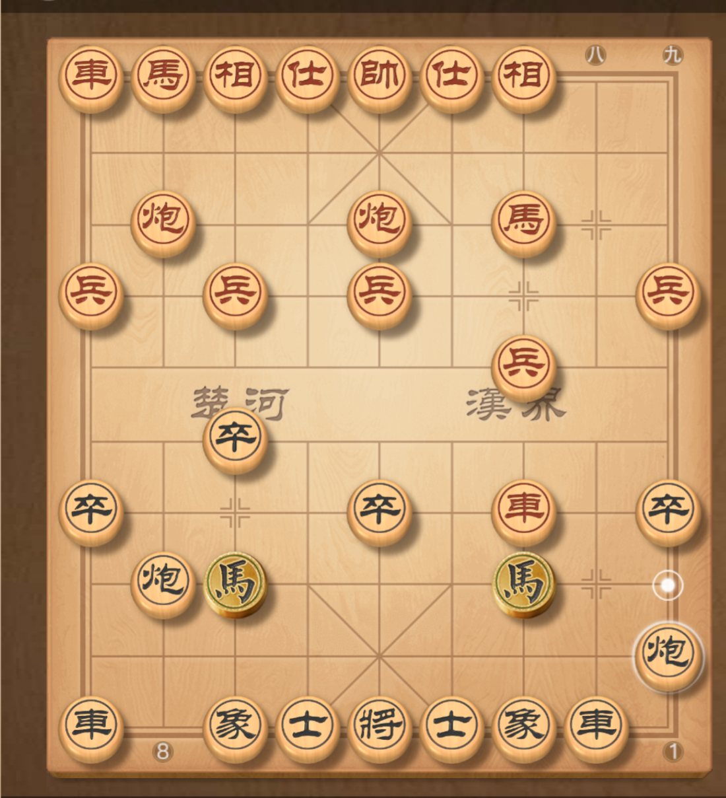
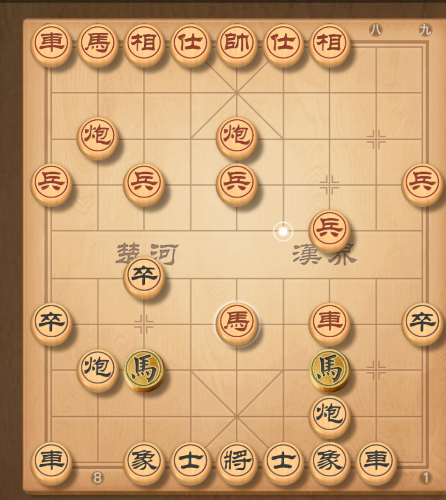
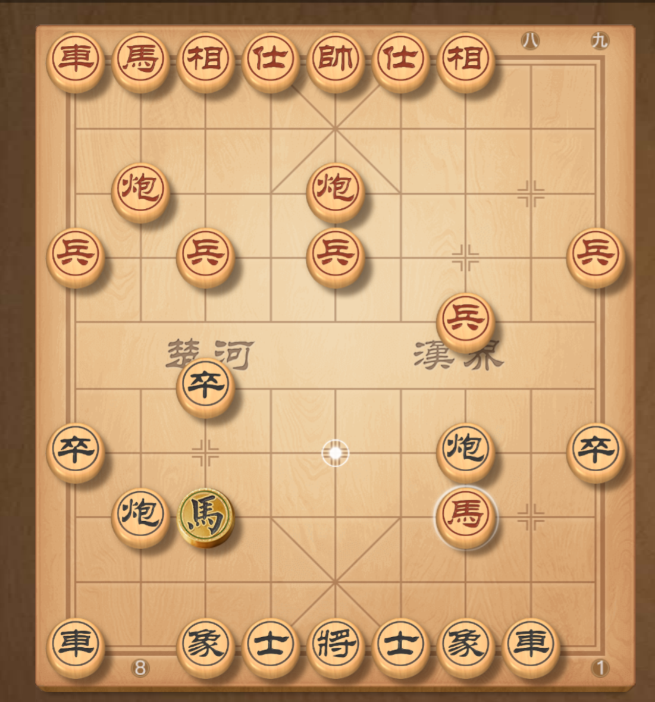
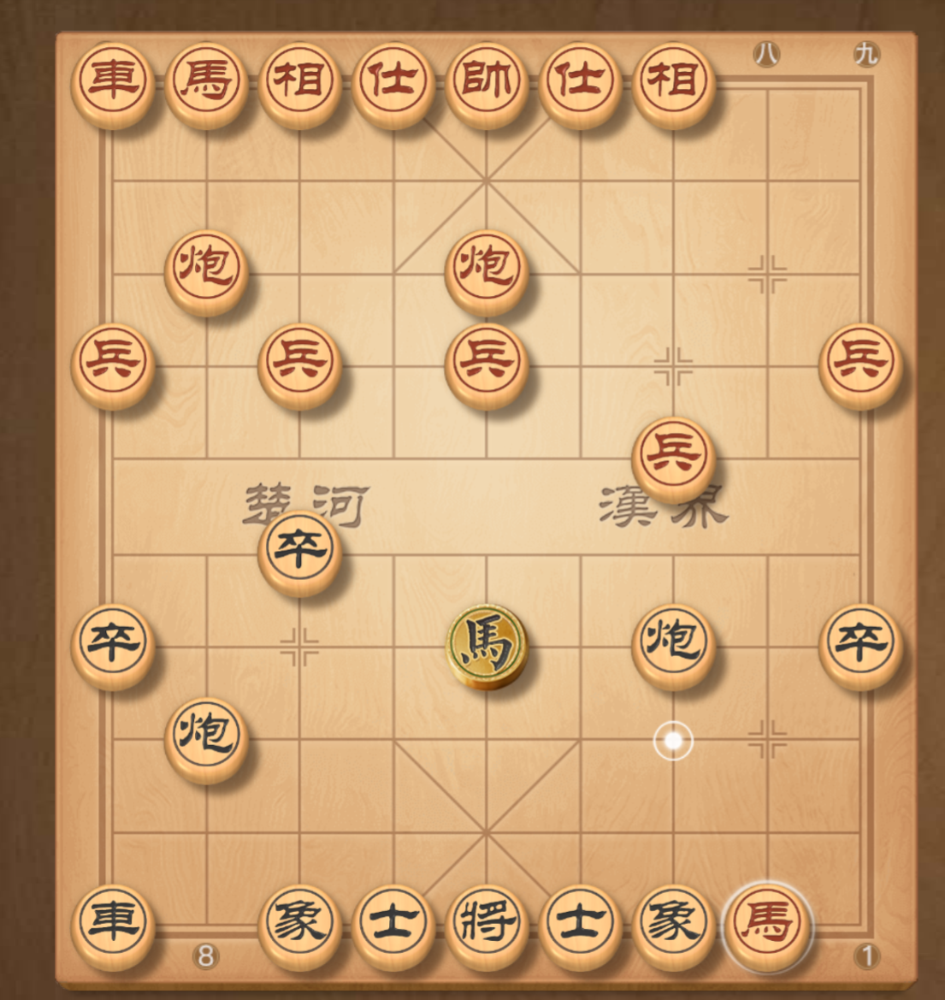
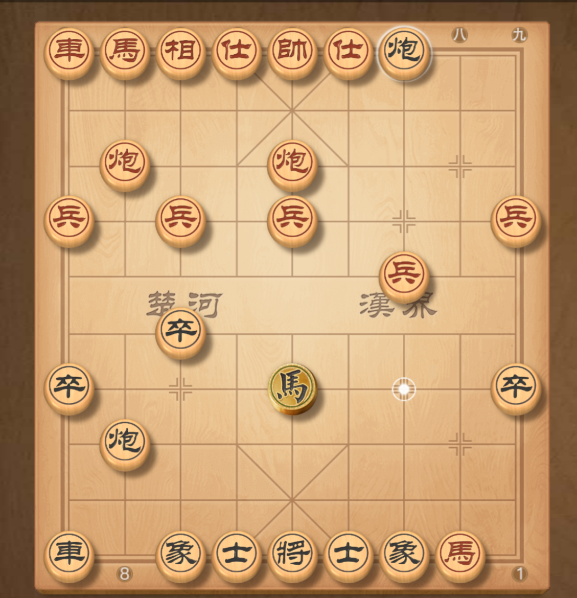
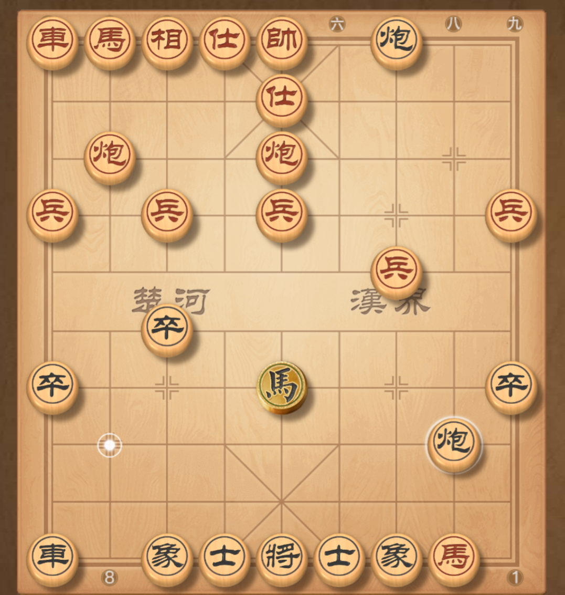
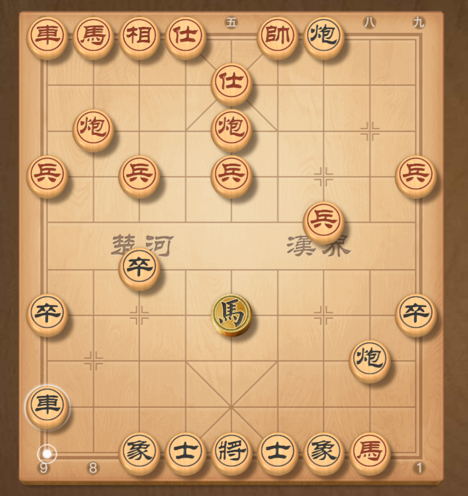
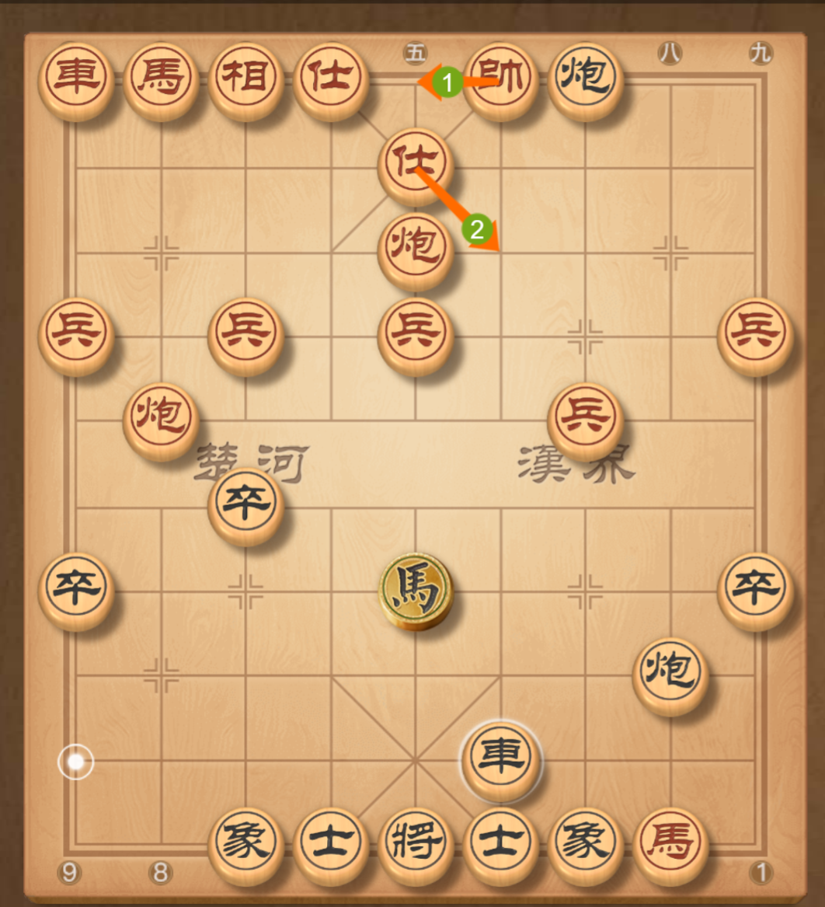
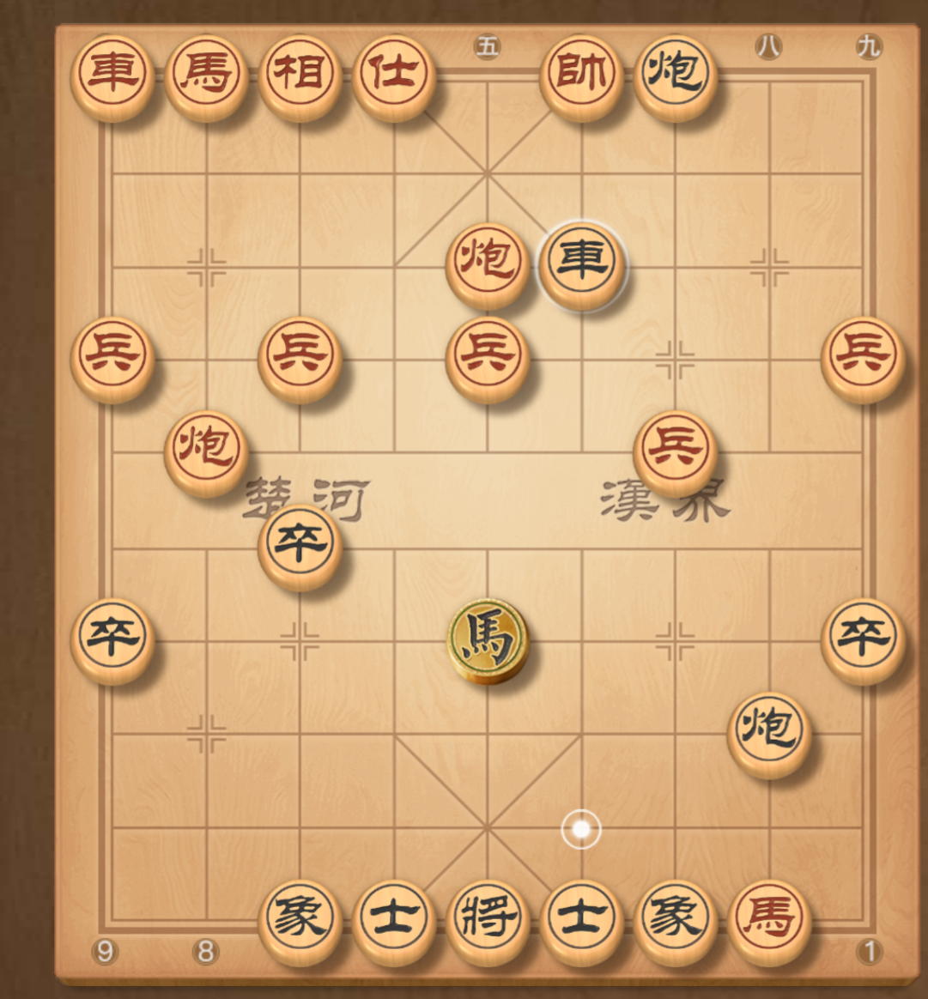
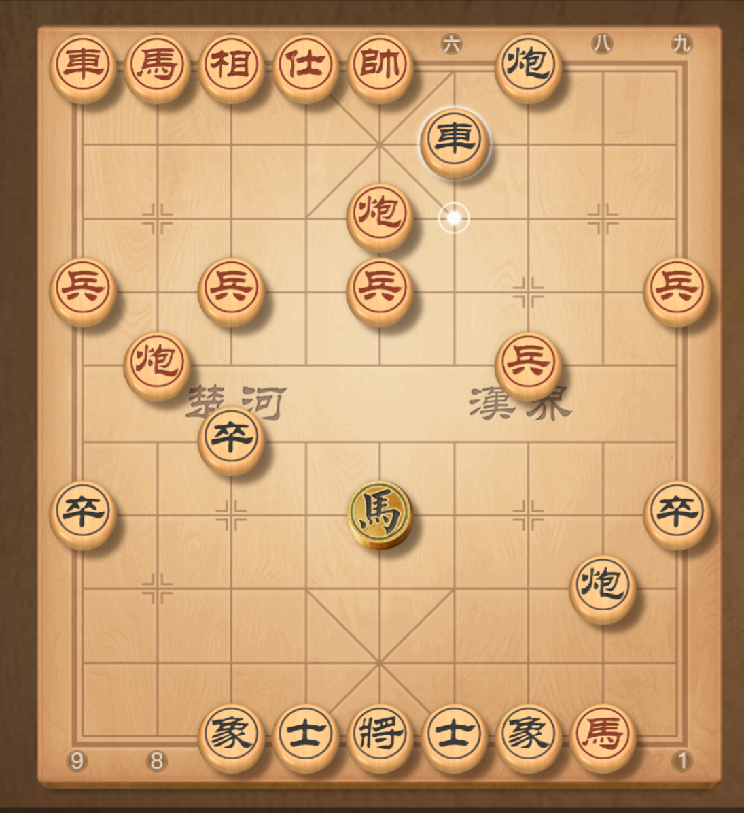

第一盘，反弃车飞刀之夹车炮
来自天天象棋的棋局截图，按整理顺序展示。点击图片可查看原图。

双方以当头炮对屏风马互进七兵开局，此时黑方正常退炮打车。

红方直接不管，马六进五踩兵，那么黑方打车。

红方马六进七踩马将军抽车。

红方踩车。

黑方直接炮击底象将军。

红方只能补士，那么黑方左炮右移叫杀。

红方仓皇出帅解杀。

黑方再高起横车，红炮二进二后黑方迎头照将。

红老帅不能回，否则重炮绝杀，只能士五进六，黑方不依不饶，车砍高士一吃。

红帅归位，黑方车再进一，等下后炮沉底便是绝杀误解。